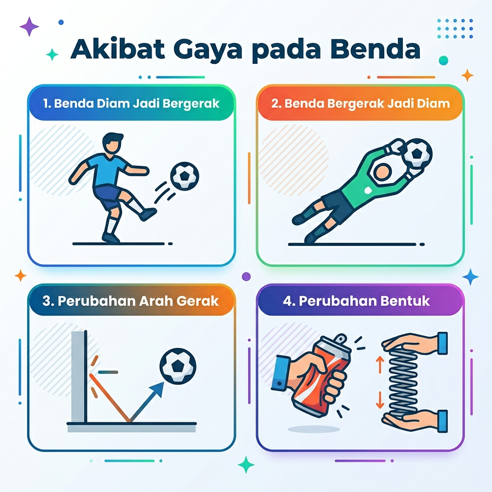
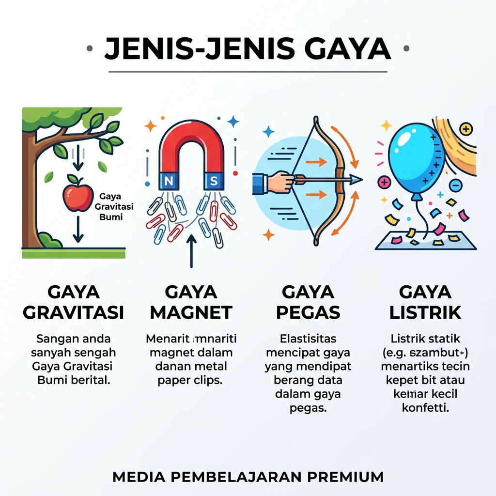
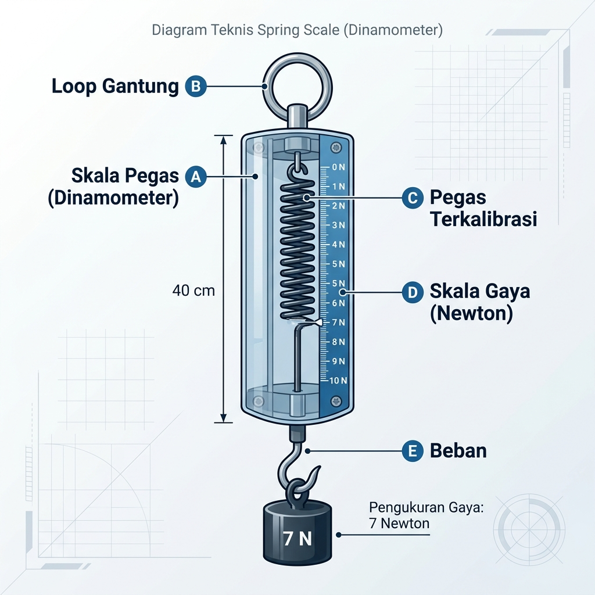
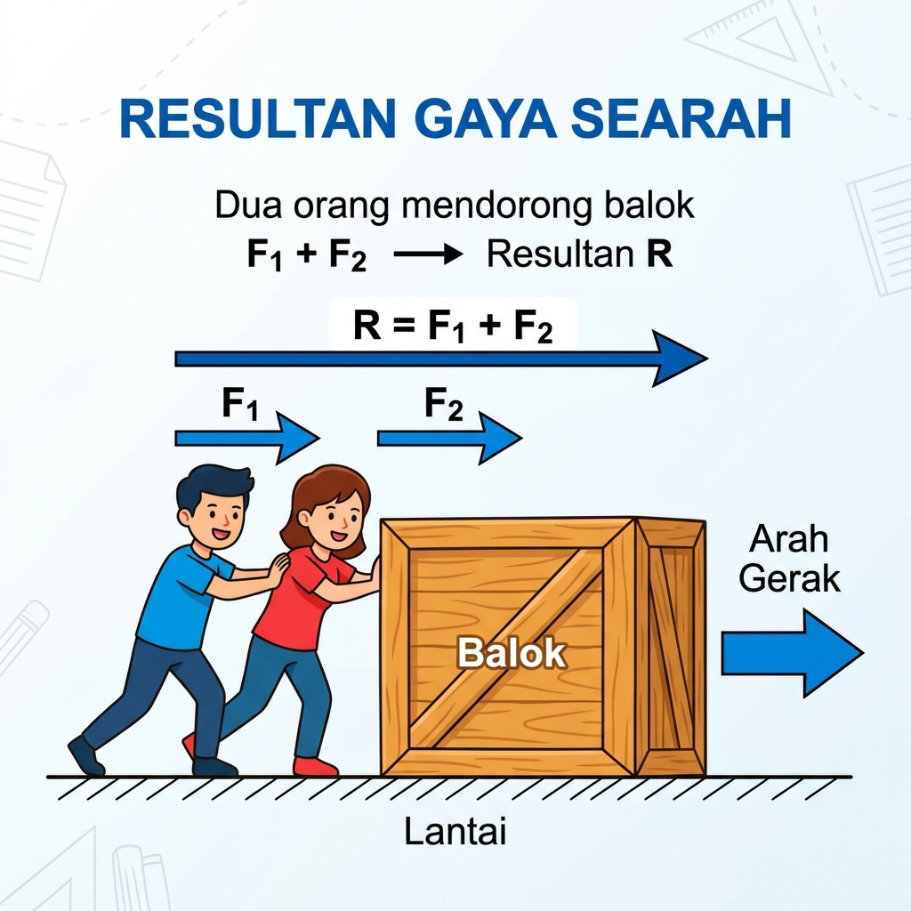
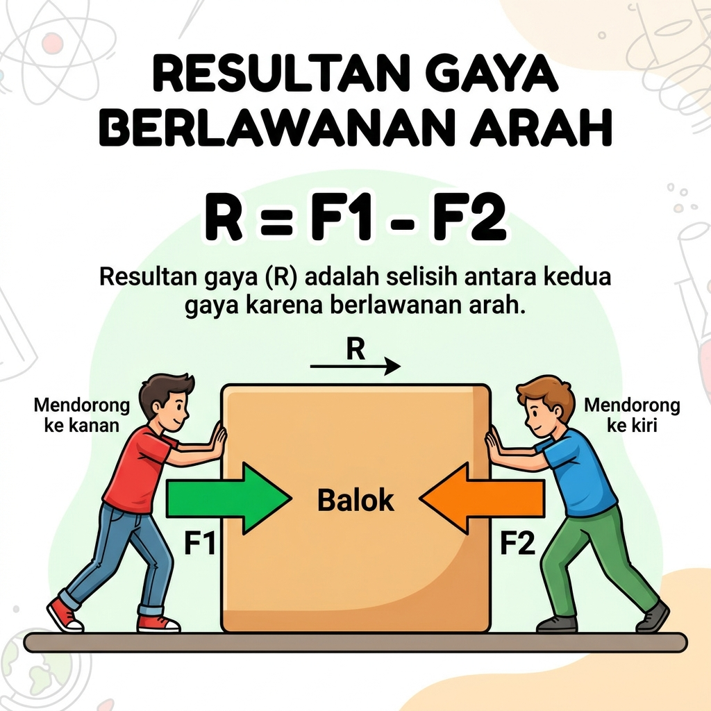

Bab 4: Gaya dan Gerak
Daftar Materi
A. Pengertian Gaya
Gaya adalah tarikan atau dorongan yang berpengaruh pada keadaan suatu benda.
Akibat Gaya pada Benda
Gaya dapat mengakibatkan beberapa perubahan sebagai berikut:
- Benda diam menjadi bergerak.
- Benda bergerak menjadi diam.
- Arah gerak benda berubah.
- Perubahan bentuk seperti pada pegas yang ditarik.

Jenis-Jenis Gaya Berdasarkan Penyebabnya
Gaya Gravitasi
Gaya tarik oleh bumi terhadap benda
Gaya Magnet
Gaya yang berasal dari magnet
Gaya Mesin
Gaya yang berasal dari mesin
Gaya Pegas
Gaya yang ditimbulkan oleh pegas
Gaya Listrik
Gaya yang ditimbulkan oleh muatan listrik

Jenis-Jenis Gaya Berdasarkan Sifatnya
Gaya Sentuh
Gaya yang titik kerja gayanya bersentuhan langsung dengan bendanya.
Contoh: gaya otot, gaya pegas, gaya gesek.
Gaya Tak Sentuh
Gaya yang titik kerja gayanya tidak bersentuhan dengan bendanya.
Contoh: gaya listrik, gaya magnet, gaya gravitasi.
Alat Pengukur Gaya
Gaya dapat diukur dengan alat yang dinamakan dinamometer.

B. Resultan Gaya
Resultan gaya adalah penjumlahan dari gaya-gaya yang bekerja pada suatu benda.
- Gaya yang arahnya ke kanan atau ke atas → diberi tanda positif (+)
- Gaya yang arahnya ke kiri atau ke bawah → diberi tanda negatif (−)
1. Resultan Gaya Searah
Jika dua gaya bekerja searah pada sebuah benda, maka resultan gayanya adalah penjumlahan kedua gaya tersebut.

2. Resultan Gaya Berlawanan Arah
Jika dua gaya bekerja berlawanan arah pada sebuah benda, maka resultan gayanya adalah selisih kedua gaya tersebut.

Ingat aturan Garis Bilangan:
- Ke Kanan (+) & Ke Kiri (-)
- Rumusnya selalu dijumlahkan: R = F₁ + F₂ + F₃ ...
- Contoh: F₁=10N ke kanan (+10), F₂=15N ke kiri (-15).
Maka R = 10 + (-15) = -5N (Gerak ke Kiri).
Lembar Kerja Peserta Didik (LKPD)
Uji pemahamanmu tentang Resultan Gaya dengan mengerjakan LKPD berikut secara mandiri atau berkelompok!
LKPD Manual (Cetak)
Gunakan versi ini untuk diskusi kelompok di atas kertas. Fokus pada menggambar model vektor secara manual.
Buka & Cetak PDFLKPD Digital (Interaktif)
Input jawaban diskusimu di sini! Tersedia fitur kanvas gambar digital dan mode kelompok (2-4 orang).
Mulai Pengerjaan DigitalC. Gaya Normal
Gaya normal (N) adalah gaya yang bekerja pada bidang yang bersentuhan antara dua permukaan benda, yang arahnya selalu tegak lurus dengan bidang sentuh.
Gaya normal selalu tegak lurus terhadap permukaan bidang sentuh, tidak peduli bagaimana orientasi permukaannya. Perhatikan ilustrasi berikut:
D. Gaya Gesek
Gaya gesek adalah gaya yang timbul akibat persentuhan langsung antara dua permukaan benda dengan arah berlawanan terhadap kecenderungan arah gerak benda.
Macam-Macam Gaya Gesek
- Gaya gesek statis: gaya gesek yang bekerja pada benda dalam keadaan diam.
- Gaya gesek kinetis: gaya gesek yang bekerja pada benda dalam keadaan bergerak.
Cara Memperkecil Gaya Gesek
- Memperkecil permukaan yang bersentuhan.
- Memisahkan kedua permukaan yang bersentuhan dengan udara.
- Menaruh benda di atas roda-roda.
- Memberi pelumas atau minyak.
Gaya Gesek Menguntungkan
- Gaya gesek antara kaki dan permukaan jalan (membuat kita bisa berjalan tanpa terpeleset).
- Gaya gesek pada rem kendaraan (untuk menghentikan laju kendaraan).
- Gaya gesek antara ban dengan jalan raya (agar kendaraan tidak tergelincir).
Gaya Gesek Merugikan
- Gesekan antara bagian-bagian mesin yang menyebabkan mesin cepat panas dan aus.
- Gesekan antara ban dengan jalan raya yang kasar menyebabkan ban mobil cepat halus (botak).
E. Gaya Berat
Berat (w)
Besarnya gaya tarik bumi terhadap suatu benda. Berat benda selalu berubah-ubah tergantung tempat benda itu berada (karena pengaruh gravitasi). Alat ukurnya: Neraca Pegas (Dinamometer).
Massa (m)
Banyaknya zat yang dikandung oleh suatu benda. Massa benda selalu tetap di mana pun benda tersebut berada. Alat ukurnya: Neraca / Timbangan.
Rumus Berat Benda
w = berat benda (N atau kg·m/s²)
m = massa (kg)
g = konstanta gravitasi bumi (m/s²)
Gaya pada Berbagai Posisi Benda Diam
Penting untuk Diingat:
- w = gaya berat benda, arahnya selalu menuju pusat bumi (ke bawah).
- N = gaya normal, arahnya selalu tegak lurus dengan bidang tekan.
Uji Pemahaman: Tebak Jenis Gaya!
Mari kita uji pemahamanmu tentang perbedaan Gaya Normal, Gaya Gesek, dan Gaya Berat. Pilih mode kuis di bawah ini (10 Soal):
Soal Cetak (PDF)
Versi cetak untuk dibagikan ke siswa di kelas. Dilengkapi kunci jawaban.
F. Hukum Newton
Hukum Newton adalah hukum tentang gaya pada suatu benda yang ditemukan dan dikemukakan oleh Sir Isaac Newton.
Hukum I Newton (Kelembaman)
“Bila resultan gaya yang bekerja pada suatu benda sama dengan nol atau tidak ada gaya yang bekerja pada benda, maka benda akan bergerak lurus dengan kelajuan tetap pada lintasan lurus (gerak lurus beraturan) atau tetap diam.”
- Benda mungkin diam.
- Benda mungkin mengalami GLB (Gerak Lurus Beraturan).
- Hukum I Newton disebut juga hukum “Kelembaman” (Inersia).
- Naik mobil, tiba-tiba direm, tubuh terasa terdorong ke depan.
- Menginjak gas mobil tiba-tiba, tubuh terdorong ke belakang.
- Kertas di bawah gelas ditarik cepat, gelas tetap diam.
Hukum II Newton
“Percepatan yang ditimbulkan oleh gaya yang bekerja pada benda berbanding lurus dengan besar gayanya dan berbanding terbalik dengan massa benda.”
Pada hukum II Newton, benda bergerak dengan GLBB (Gerak Lurus Berubah Beraturan).
Hukum III Newton (Aksi - Reaksi)
“Apabila sebuah benda dikenai suatu gaya maka benda tersebut akan memberikan gaya yang besarnya sama dengan gaya yang diterima tetapi dengan arah berlawanan.”
- Saat kaki kita menendang tembok maka terasa sakit karena tembok memberikan gaya reaksi ke tangan/kaki.
- Saat mendayung perahu, kita mendayung ke arah belakang, kemudian perahu bergerak ke depan (gaya dorong ke air berbalas gaya dorong air ke perahu).
- Semburan gas panas ke bawah dari roket mendorong roket meluncur ke atas.
LKPD: Analisis Hukum Newton
Mari pecahkan kasus-kasus penerapan Hukum Newton dalam kehidupan sehari-hari bersama kelompokmu! Pilih mode pengerjaan di bawah ini:
LKPD Digital Multiplayer
Dapat dikerjakan oleh 2-4 kelompok sekaligus di satu layar. Soal akan diacak dan jawaban otomatis terkunci untuk mencegah contek-menyontek.
Buka Layar TerbagiLKPD Cetak (PDF)
Lembar kerja cetak klasik yang siap dibagikan ke siswa di kelas. Dilengkapi kunci jawaban & pembahasan.
G. Konsep Dasar Gerak
Gerak adalah perubahan posisi atau kedudukan suatu benda terhadap titik acuan atau titik mulanya.
Gerak suatu benda bersifat relatif tergantung titik acuannya. Misal: Via berangkat ke sekolah diantar kakaknya naik sepeda motor. Via dikatakan bergerak jika titik acuannya adalah sekolah. Akan tetapi, jika titik acuannya sepeda motor, maka Via dikatakan diam.
Gerak semu adalah di mana suatu benda yang diam tampak seolah-olah bergerak. Contoh: ketika kita berada di dalam bus atau kereta yang sedang berjalan, maka gedung-gedung, pohon-pohon yang dilalui seolah-olah bergerak.
Jarak vs Perpindahan
Panjang seluruh lintasan yang ditempuh benda. (Besaran skalar)
Perubahan posisi benda dihitung dari posisi awal ke akhir. (Besaran vektor)
Jarak = 10 + 4 = 14 m. Perpindahan = 10 - 4 = 6 m.
Kelajuan, Kecepatan, dan Percepatan
- Kelajuan (skalar): Jarak yang ditempuh tiap satuan waktu.
- Kecepatan (vektor): Perpindahan yang ditempuh tiap satuan waktu.
- Percepatan (a): Besarnya perubahan kecepatan tiap satu satuan waktu.
Contoh Soal & Pembahasan
Seorang pelari berlari lurus ke arah Timur sejauh 100 meter selama 10 detik, lalu berbalik arah berlari ke Barat sejauh 40 meter selama 10 detik. Tentukanlah:
- Berapakah Kelajuan rata-rata pelari tersebut?
- Berapakah Kecepatan rata-rata pelari tersebut?
- Jika setelah itu pelari berlari lurus dan mempercepat larinya dari kecepatan 2 m/s menjadi 6 m/s dalam waktu 4 detik, berapakah Percepatannya?
- 1. Kelajuan (Skalar) = Total Jarak / Total Waktu
Jarak = 100m + 40m = 140m. Waktu = 10s + 10s = 20s.
Kelajuan = 140 / 20 = 7 m/s. - 2. Kecepatan (Vektor) = Perpindahan / Total Waktu
Perpindahan = 100m (Timur) - 40m (Barat) = 60m. Waktu = 20s.
Kecepatan = 60 / 20 = 3 m/s (ke arah Timur). - 3. Percepatan (a) = (vt - v0) / Δt
a = (6 - 2) / 4 = 4 / 4 = 1 m/s².
- Fokus pada "Kata Kunci": Jika ditanya KeLAJUan, ingat kata "LAJU" identik dengan "J" berarti pakai Jarak (dijumlahkan semua lintasannya). Jika ditanya KecePATAn, ingat "PATA" identik dengan "P" berarti pakai Perpindahan (dikurangkan jika berbalik arah).
- Selalu samakan satuan: Sebelum menghitung, pastikan satuan sudah sama (misalnya jarak dalam "meter" dan waktu dalam "sekon"). Jika waktu masih dalam menit, kalikan 60 dulu!
- Kondisi Khusus Percepatan: Jika soal mengatakan benda "mengerem hingga berhenti", maka Kecepatan Akhir (vt) = 0. Jika benda "bergerak dari keadaan diam", maka Kecepatan Awal (v0) = 0.
H. Gerak Lurus Beraturan (GLB)
Gerak lurus beraturan (GLB) adalah gerak benda dengan lintasan garis lurus dan memiliki kelajuan tetap setiap saat.
- Memiliki kelajuan yang tetap ($v_t = v_0 = v$).
- Tidak mengalami percepatan ($a = 0$).
Grafik GLB
Garis mendatar: Kecepatan konstan.
Garis miring naik: Jarak bertambah beraturan.
I. Gerak Lurus Berubah Beraturan (GLBB)
Gerak lurus berubah beraturan (GLBB) adalah gerak benda dengan lintasan garis lurus dan memiliki kecepatan setiap saat berubah (memiliki percepatan yang tetap, $a = konstan$).
Persamaan Matematis GLBB
Tanda (+) jika benda dipercepat. Tanda (−) jika benda diperlambat.
GLBB Dipercepat
Kecepatan bertambah setiap saat.
- Apel jatuh dari pohon.
- Gerak benda pada bidang miring.
GLBB Diperlambat
Kecepatan berkurang setiap saat.
- Benda dilempar ke atas.
- Pesawat yang mengerem.
Pola Ticker Timer dan Tetesan Oli
(Ticker Timer)
(Tetesan Oli)
LKPD Diskusi Kelompok: Analisis Gerak
Mari uji pemahaman analisis kalian mengenai konsep Gerak Relatif, Jarak, Perpindahan, GLB, dan GLBB secara berkelompok (2-4 orang).
Format Digital Interaktif
Mode Split-Screen! Dikerjakan serentak oleh 2-4 kelompok tanpa bisa saling menyontek.
Mulai Kuis DigitalUji Kompetensi Akhir Bab
Setelah mempelajari semua materi tentang Gaya dan Gerak, mari kita uji pemahamanmu secara menyeluruh. Silakan pilih format latihan soal di bawah ini:
Soal Latihan (PDF)
Format cetak resmi untuk tugas tertulis di kelas. Anda dapat melihat dan mencetaknya langsung.
Latihan Digital Interaktif
Kuis interaktif dengan evaluasi dan skor instan di akhir sesi.
Mulai Kuis Digital